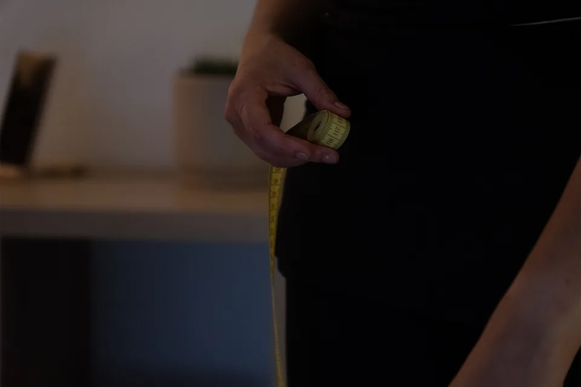
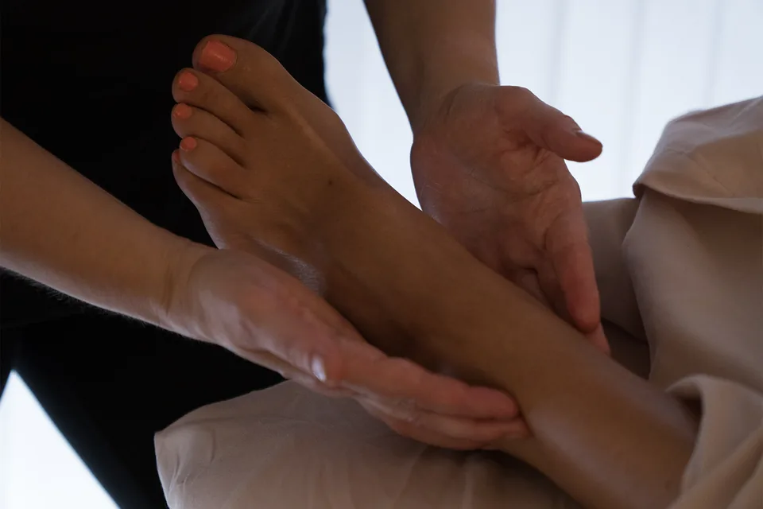

L'Initiale
La séance Initiale est le point de départ de tout accompagnement — elle ne peut pas être remplacée. C'est lors de cette séance que nous apprenons à nous connaître et que je comprends votre corps, vos habitudes et vos objectifs.
Elle se compose d'un bilan personnalisé, d'une prise de mensurations complète et d'une première séance de drainage lymphatique Méthode Nado® — la base de référence de votre suivi.


L'Élan — 5 séances
Un premier protocole progressif pour inscrire le travail dans la durée. Idéal pour découvrir les effets d'un suivi régulier, retrouver légèreté et confort, et mesurer des résultats concrets au fil des séances.
Chaque séance est adaptée à l'évolution de votre corps depuis la précédente.
Si vous vous engagez dans les 7 jours qui suivent votre Initiale, celle-ci compte comme première séance de L'Élan.
Ce forfait ne se réserve pas en ligne : il se décide ensemble, en général à l'issue de l'Initiale. Appelez le 07 69 85 36 79.
L'Alignement — 10 séances
Le protocole complet, conçu pour des résultats profonds et durables. Construit autour du drainage lymphatique, il peut être progressivement complété par du remodelage de la silhouette, selon vos objectifs.
Ce suivi approfondi permet au corps d'intégrer pleinement les bénéfices de la méthode, avec un point d'étape mesuré à mi-parcours et une réévaluation finale pour objectiver l'évolution.
Si vous vous engagez dans les 7 jours qui suivent votre Initiale, celle-ci compte comme première séance de L'Alignement.
Ce forfait ne se réserve pas en ligne : il se décide ensemble, en général à l'issue de l'Initiale. Appelez le 07 69 85 36 79.
Le remodelage corporel en détail →
L'Essentiel
Une séance d'entretien pour prolonger les bienfaits d'un accompagnement terminé, ou accompagner ponctuellement une période de fatigue, de rétention ou de stress.
Réservée aux clientes ayant déjà suivi une séance Initiale, l'Essentiel s'adapte à votre état du moment et à l'évolution de votre corps depuis le dernier soin.
L'Apaisement
Ce protocole n'est pas pensé comme un simple moment de détente, mais comme une véritable récupération pour le corps et le système nerveux. Inspiré du massage suédois et affiné sur 29 ans de pratique par Élisabeth Nado, il associe gestes enveloppants, pressions ciblées et étirements doux pour aider le corps à relâcher ce qu'il retient.
Le but n'est pas de faire une pause agréable, mais d'aider votre corps à vraiment redescendre. Un accompagnement particulièrement adapté aux périodes de surmenage, de fatigue nerveuse ou de rythme de vie trop intense.
Comme pour les autres soins du cabinet, ce massage n'est pas proposé aux femmes enceintes.
Réserver L'Apaisement — 100 €Contre-indications
La Méthode Nado® est douce et non invasive. Certaines situations nécessitent cependant un avis médical préalable, ou contre-indiquent temporairement le drainage. En cas de doute, contactez-moi — je prendrai le temps de vous répondre.
Contre-indications absolues (drainage interdit)
Thrombose veineuse / phlébite non stabilisée
Risque de déplacement du caillot pouvant entraîner une embolie pulmonaire.
Infection aiguë (fièvre, virus, infection bactérienne)
Risque de dissémination de l'infection dans tout l'organisme.
Insuffisance cardiaque décompensée
Le drainage augmente le retour veineux, surchargeant un cœur déjà fragilisé.
Cancer en phase évolutive non stabilisée
Risque théorique de stimulation de la dissémination tumorale.
Grossesse (tous trimestres confondus)
Le drainage n'est pas proposé pendant la grossesse. Les séances peuvent reprendre après l'accouchement, selon les délais indiqués en FAQ.
Contre-indications relatives (drainage possible, avec prudence)
Hypertension non contrôlée
Prudence sur la nuque et les zones cervicales.
Asthme sévère
Éviter de stimuler trop intensément la cage thoracique.
Diabète avancé
Vigilance : fragilité tissulaire et sensibilité accrue.
Maladies auto-immunes (ex. lupus)
Adaptation de la fréquence et de l'intensité. Avis médical nécessaire.
Problèmes cutanés actifs (eczéma suintant, plaies, mycoses)
Éviter la zone atteinte.
Un questionnaire préalable est rempli lors de chaque séance Initiale pour vérifier l'absence de contre-indication. En cas de doute, contactez-moi directement.
Commencez par l'Initiale
La séance Initiale est la base de tout accompagnement. 1h45, bilan personnalisé et première séance complète de drainage.